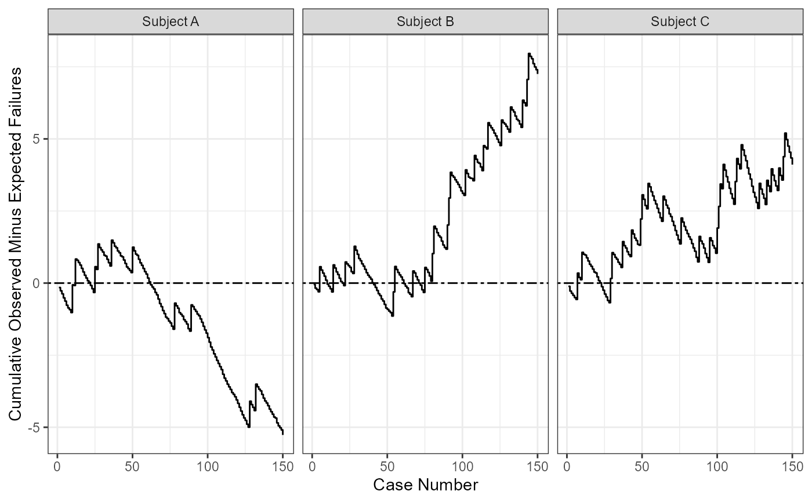

Calculates the cumulative observed-minus-expected failure for a series of procedures which can be used to create CUSUM charts.
Arguments
- xi
An integer. The dichotomous outcome variable (1 = Failure, 0 = Success) for the i-th procedure.
- p0
A double. The acceptable event rate.
- by
A factor. Optional variable to stratify procedures by.
References
Rogers, C. A., Reeves, B. C., Caputo, M., Ganesh, J. S., Bonser, R. S., & Angelini, G. D. (2004). Control chart methods for monitoring cardiac surgical performance and their interpretation. The Journal of Thoracic and Cardiovascular Surgery, 128(6), 811-819.
Examples
library(purrr)
library(ggplot2)
# Data
df <- data.frame(
xi = simplify(
map(
c(.1,.08,.05,.1,.13,.14,.14,.09,.25),
~ rbinom(50,1,.x))),
p0 = simplify(
map(
c(.1,.1,.1,.1,.1,.1,.1,.15,.2),
~ rnorm(50,.x,.03))),
by = rep(
factor(paste('Subject', c('A','B','C'))),
times = c(150,150,150))
)
# Create CUSUM plot
cusum_ome(
xi = df$xi,
p0 = df$p0,
by = df$by
) |>
ggplot(aes(x = i, y = cusum)) +
geom_hline(yintercept = 0, linetype = 6, linewidth = 0.5) +
geom_step() +
ylab("Cumulative Observed Minus Expected Failures") +
xlab("Case Number") +
facet_wrap(~ by) +
theme_bw()
